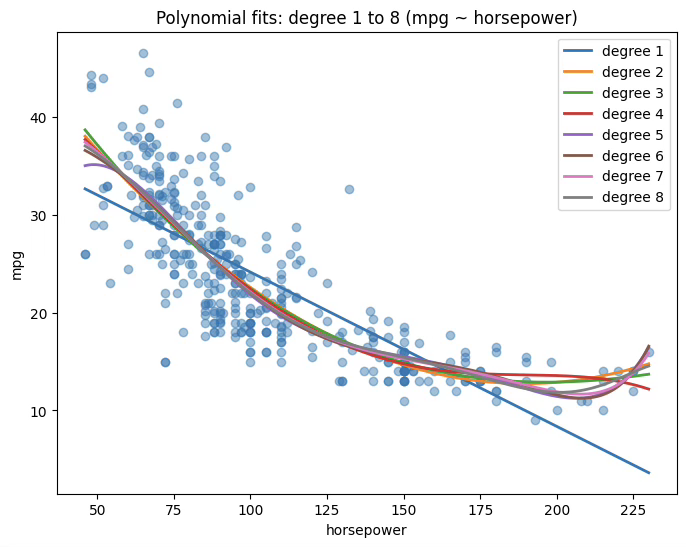
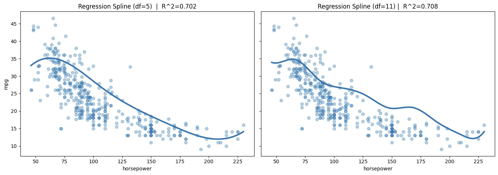
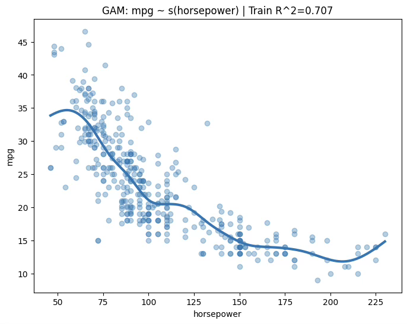
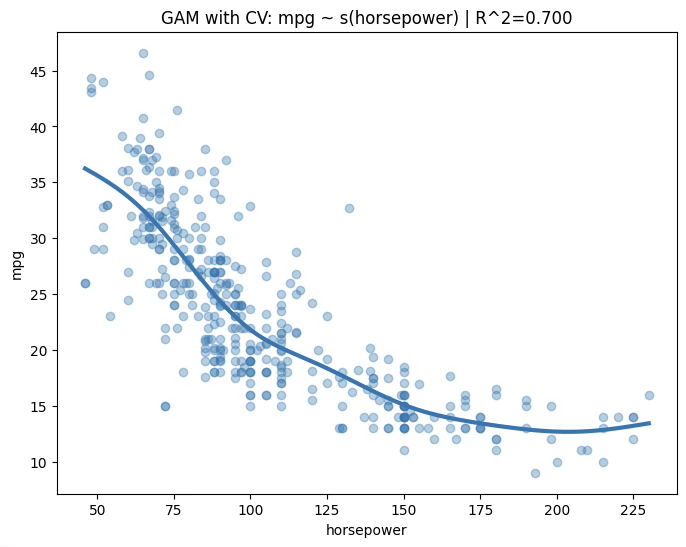

MLDL 예측방법 | 비선형회귀
Chapter 1. 비선형 회귀
선형회귀는 ”계수에 대해 선형”인 모형이라는 점에서 매우 강력하지만, 반응변수 Y와 설명변수 X 사이의 실제 관계가 비선형일 때는 체계적인 편향이 발생한다. 이 장의 핵심은 모형을 비선형로 바꾸는 것이 아니라, 입력 X를 적절한 함수로 변환하여(특징공간을 확장하여) 여전히 선형회귀 프레임 안에서 비선형성을 표현하는 방법을 정리하는 것이다. 즉, 다음과 같은 형태를 공통 골격으로 둔다.
\(Y = \beta_{0} + \overset{p}{\sum_{j = 1}}f_{j}(X_{j}) + \varepsilon,\mathbb{E}\lbrack\varepsilon\rbrack = 0\), 여기서 \(f_{j}( \cdot )\)를 어떻게 잡느냐가 방법론을 갈라놓는다. 복잡도를 키우면 훈련오차는 줄지만 과적합 위험이 커지므로, 검증오차(교차검증)나 정보기준, 혹은 규제(패널티)를 통해 복잡도를 통제하는 것이 일관된 원칙이다.
1. 다항회귀(Polynomial Regression)
왜 다항회귀가 필요한가
선형회귀는 조건부 평균을 \(\mathbb{E}\lbrack Y \mid X\rbrack = \beta_{0} + \beta_{1}X\)처럼 직선 형태로 근사한다. 그러나 실제 데이터에서는 X와 Y의 관계가 곡선 형태(가속/포화/굽음)를 보이는 경우가 많다. 이때 ”모형을 비선형으로 바꾸는” 가장 간단한 방법이 입력변수의 다항식 변환이다.
핵심은 다음 한 문장이다. 다항회귀는 X에는 비선형이지만, \(\beta\)에는 선형인(=선형회귀의) 모형이다. 즉, 추정과 해석(최소제곱, t-검정, F-검정, AIC/BIC 등)의 틀은 선형회귀와 동일하게 유지되면서, 표현력만 확장한다.
다항회귀 장점
다항회귀의 장점은 구현이 쉽고, 저차에서는 해석이 직관적이며 계산이 빠르다는 점이다. 그러나 차수 d가 커질수록 여러 문제가 동시에 커진다. 먼저 다항식은 구간의 끝부분에서 곡선이 과도하게 흔들리는 경향이 있어 경계에서 요동(런지 현상)이 나타나기 쉽다. 또한 \(X,X^{2},\ldots,X^{d}\) 항들은 서로 강하게 상관되어 다중공선성이 심해지고, 그 결과 추정된 계수의 분산이 커져 추론과 해석이 불안정해진다. 더불어 학습 구간 밖으로 조금만 벗어나도 예측값이 급격히 발산할 수 있어 외삽(extrapolation)에서 불안정성이 크게 증가한다.
따라서 실무에서는 차수 d를 개별 계수의 유의성에 기대어 선택하기보다, 교차검증을 통해 예측오차가 최소가 되는 수준으로 결정하는 것이 안전하다. 특히 다변량 상황에서 여러 설명변수에 높은 차수를 동시에 부여하면 생성되는 항의 수가 급격히 증가하여 차원이 폭발적으로 커지므로, 낮은 차수에서 시작해 필요할 때만 제한적으로 확장하는 접근이 바람직하다.
단일 설명변수 다항회귀
다항회귀는 가장 단순한 비선형 확장이다. 단일 설명변수 X에 대해
\(Y = \beta_{0} + \beta_{1}X + \beta_{2}X^{2} + \cdots + \beta_{d}X^{d} + \varepsilon\) 로 두면, 곡선 형태의 관계를 표현할 수 있다. 중요한 점은 이 모형이 X에 대해서는 비선형이지만 \(\beta\)에 대해서는 선형이므로, 최소제곱추정/해석/진단의 기본 도구를 그대로 유지한다는 것이다.
행렬 형태로 쓰면, \(\mathbf{y} = \mathbf{X}_{d}\mathbf{\beta} + \mathbf{\varepsilon}\), 여기서 \(\mathbf{X}_{d}\)는 \(\lbrack 1,X,X^{2},\ldots,X^{d}\rbrack\)열들을 가진 설계행렬이다.
추정(OLS)과 해석 포인트
추정은 선형회귀와 동일하게 최소제곱으로 한다:
\[\widehat{\mathbf{\beta}} = \arg\min_{\mathbf{\beta}} \parallel \mathbf{y} - \mathbf{X}_{d}\mathbf{\beta} \parallel^{2}\]
주의할 점은 계수 해석이 ”기울기” 하나로 끝나지 않는다는 것이다. 다항회귀에서 X의 국소적 효과(미분)는 \(\frac{d}{dx}\mathbb{E}\lbrack Y \mid X = x\rbrack = \beta_{1} + 2\beta_{2}x + \cdots + d\beta_{d}x^{d - 1}\)처럼 x에 따라 달라진다. 따라서 ”\(\beta_{2}\)가 양수면 위로 굽는다” 같은 정성적 해석은 가능하지만, 단일 계수만으로 효과를 단정하기보다는 예측곡선 자체를 그려 확인하는 것이 안전하다.
차수 선택과 과적합
다항 차수 d는 모형 복잡도를 직접 올린다. d가 작으면 표현력이 부족해 과소적합, d가 크면 훈련오차는 줄어도 새 데이터에서 과적합 가능이 높아진다. 따라서 d는 보통 아래 기준으로 선택한다.
1. 검증오차/교차검증 오차 최소화(CV-RMSE, CV-MAE 등)
2. 목적이 추론/간결성이라면 AIC/BIC 보조 활용
3. ”해석 가능성”이 중요하면 지나치게 큰 d는 피함
다항 차수와 설명변수 개수 결정
다항회귀를 설계할 때 가장 중요한 결정은 다항 차수 d를 어디까지 올릴 것인가와, 어떤 설명변수들을 다항 확장에 포함할 것인가(사실상 다항 확장에 들어가는 변수 수를 얼마나 크게 할 것인가)이다. 이 두 선택은 단순히 ”모형을 조금 더 유연하게 만든다”는 수준을 넘어, 특징공간의 크기와 복잡도를 결정하고 과적합 위험, 다중공선성, 계산비용까지 함께 좌우한다.
먼저 다항항의 개수가 어떻게 증가하는지를 이해해야 한다. 설명변수가 p개일 때 최대 차수 d까지의 전체 다항항(상호작용 포함, 절편 포함)을 구성하면 항의 총개수는 \(m(p,d) = \binom{p + d}{d}\)로 주어진다. 이 값은 p나 d가 조금만 커져도 매우 빠르게 커진다. 특히 d=2만 되어도 항의 수가 대략 \(O(p^{2})\)로 늘어나고, d=3에서는 \(O(p^{3})\)수준으로 증가한다. 따라서 ”차수를 조금만 더 올려보자” 혹은 ”변수를 모두 다항으로 확장하자”는 선택은 곧바로 항의 폭증으로 이어질 수 있으며, 표본 크기 n에 비해 항의 수가 커지는 순간 일반화 성능이 불안정해지기 쉽다.
이런 이유로 다항 차수 d는 훈련오차를 기준으로 정하는 것이 아니라, 검증오차(또는 교차검증 오차)를 기준으로 선택하는 것이 원칙이다. 실제 절차에서는 \(d = 1,2,3,\ldots\)과 같이 작은 차수부터 후보를 두고, 각 차수별로 교차검증을 통해 CV-RMSE나 CV-MAE 같은 검증 성능을 계산한 뒤 그 값이 가장 작은 차수를 택한다. 다만 검증오차가 최소가 되는 지점이 뾰족하지 않고 넓게 평평한 경우가 많으므로, 오차가 비슷하다면 더 작은 차수를 선택해 단순성을 확보하는 편이 일반적으로 안정적이다. 해석이 목적일 때는 이 경향이 더 강해져서, 곡선성이 존재하는지 확인하는 수준에서는 보통 d=2 또는 d=3 정도가 충분한 경우가 많다. 반대로 d를 크게 올려야만 성능이 좋아지는 상황이라면, 다항식 자체가 적절한 표현방식인지(예: 스플라인이나 트리 기반 모델이 더 자연스러운지)도 함께 점검하는 것이 좋다.
설명변수 개수의 결정은 단순히 ”원래 변수 p를 얼마나 넣을 것인가”라기보다, 실제로는 ”그중 몇 개를 다항 확장 대상 변수로 삼을 것인가”라는 문제로 이해하는 것이 실무적으로 더 적절하다. 모든 변수를 동일하게 다항 확장하는 방식은 항의 수를 폭발적으로 늘리기 쉽고, 불필요한 복잡도를 초래할 가능성이 높다. 따라서 일반적으로는 비선형 관계가 의심되는 연속형 변수 몇 개를 중심으로 다항항을 추가하고, 나머지 변수들은 1차 선형항으로 유지하는 방식이 더 안정적이다. 어떤 변수를 확장할지는 도메인 지식과 탐색적 진단(예: 잔차 플롯, 부분잔차 플롯, 변수별 비선형 패턴 확인)을 결합해 선정하는 것이 좋으며, 실제 선택은 ”추가했을 때 검증오차가 의미 있게 감소하는가”를 기준으로 결정한다. 예를 들어 기본 선형모형으로 시작한 뒤, 비선형이 의심되는 변수에 대해 \(X^{2}\)를 추가하고 교차검증 오차가 줄어드는지를 보고, 필요하면 \(X^{3}\)까지 확장하되 개선이 멈추면 중단하는 식의 보수적 확장 전략이 흔히 사용된다.
다중공선성과 수치 안정성: 중심화·스케일링·직교기저
다항항들은 서로 강한 상관을 만들기 쉽다(예: X와 \(X^{2}\)는 대개 강하게 연관). 그 결과 \(\widehat{\beta}\)가 불안정해지고(표준오차 증가), 계수 부호/크기가 표본에 민감해지며 추론이 흔들릴 수 있다. 이를 완화하는 대표적 방법은 다음과 같다.
(1) 중심화(centering): \(X_{c} = X - \overline{X},X_{c}^{2},X_{c}^{3},\ldots\)처럼 평균을 빼서 다항항을 만들면, 특히 절편과 저차항 해석이 좋아지고 공선성이 완화되는 경우가 많다.
(2) 스케일링(scaling): 다항항은 스케일이 급격히 커지므로 표준화(예: z-score) 후 다항항을 만들면 수치적으로 안정적이다.
(3) 직교 다항식(orthogonal polynomials): 소프트웨어에 따라 직교기저를 사용하면(예: R의 poly()), 다중공선성을 크게 줄이면서 같은 곡선공간을 표현할 수 있다. 단, 이때 계수 해석은 덜 직관적일 수 있다(예측곡선 중심으로 해석 권장)
2. 계단함수(Step Functions)
개념
특징(설명변수)의 다항함수를 선형모형의 예측변수로 사용하면, X의 비선형 함수 형태에 전 구간에 걸친(global) 구조를 강제로 부여하게 된다. 우리는 이러한 전역 구조를 강제하지 않기 위해, 대신 계단함수(step functions)를 사용할 수 있다. 여기서는 X의 범위를 여러 개의 구간(bin)으로 나누고, 각 구간마다 서로 다른 상수를 적합한다. 이는 연속형 변수를 순서가 있는 범주형 변수(ordered categorical variable)로 변환하는 것과 같다.
모형
좀 더 구체적으로, X의 범위 안에 절단점(cutpoint) \(c_{1},c_{2},\ldots,c_{K}\)를 만들고, 그 다음 K+1개의 새로운 변수를 다음과 같이 구성한다.
\[\begin{matrix} C_{0}(X) & = I(X < c_{1}), \\ C_{1}(X) & = I(c_{1} \leq X < c_{2}), \\ C_{2}(X) & = I(c_{2} \leq X < c_{3}), \\ & \vdots \\ C_{K - 1}(X) & = I(c_{K - 1} \leq X < c_{K}), \\ C_{K}(X) & = I(c_{K} \leq X), \end{matrix}\]
여기서 \(I( \cdot )\)는 조건이 참이면 1을, 그렇지 않으면 0을 반환하는 지시함수(indicator)이다. 예를 들어 \(I(c_{K} \leq X)\)는 \(c_{K} \leq X\)이면 1이고, 그렇지 않으면 0이다. 이러한 변수들은 때때로 더미 변수라고도 불린다.
추정
어떤 X 값에 대해서도 X는 K+1개의 구간 중 정확히 하나에 속해야 하므로, \(C_{0}(X) + C_{1}(X) + \cdots + C_{K}(X) = 1\)이 성립한다는 점에 주목하라. 그런 다음 \(C_{1}(X),C_{2}(X),\ldots,C_{K}(X)\)를 예측변수로 사용하여 최소제곱으로 선형모형을 적합한다.
\[y_{i} = \beta_{0} + \beta_{1}C_{1}(x_{i}) + \beta_{2}C_{2}(x_{i}) + \cdots + \beta_{K}C_{K}(x_{i}) + \varepsilon_{i}\]
주어진 X 값에 대해 \(C_{1},C_{2},\ldots,C_{K}\)중에서 0이 아닌 값은 많아야 하나뿐이다. 또한 \(X < c_{1}\)이면 모든 예측변수가 0이 되므로, \(\beta_{0}\)는 \(X < c_{1}\)일 때의 Y 평균값으로 해석될 수 있다. 반면 \(c_{j} \leq X < c_{j + 1}\)일 때 반응을 \(\beta_{0} + \beta_{j}\)로 예측하므로, \(\beta_{j}\text{는}X < c_{1}\)인 경우에 비해 \(c_{j} \leq X < c_{j + 1}\) 구간에서 반응이 평균적으로 얼마나 증가하는지를 나타낸다.
계단함수 모형은 연속형 설명변수 X의 범위를 여러 구간으로 나누고, 각 구간에서 반응변수 Y의 평균을 서로 다른 상수로 추정하는 방식이다. 따라서 결과는 본질적으로 ”구간별 평균이 얼마나 다른가”로 해석되며, 각 구간을 나타내는 지시함수 I(\cdot)를 만들면 구조가 범주형 더미변수를 사용하는 선형모형과 거의 동일해진다.
이 접근의 장점은 형태 가정이 매우 약하다는 점이다. 각 구간에서 상수만 추정하므로 구현이 단순하고, 이상치나 약한 비선형성에 대해 비교적 강건하며, 특정 기준을 기준으로 상태가 달라지는 임계값(threshold) 개념이 있는 문제에서 특히 직관적으로 작동한다. 반면 추정된 함수는 구간 경계에서 값이 갑자기 변하는 불연속 형태가 되므로 실제 관계가 매끈하게 변하는 상황에서는 중요한 추세를 놓칠 수 있다. 또한 절단점의 위치와 절단점 개수에 따라 적합 결과가 크게 달라질 수 있어 민감성이 존재한다.
따라서 실무에서는 절단점 개수 K를 임의로 정하기보다, 교차검증을 통해 일반화 오차가 가장 작은 수준으로 선택하는 것이 원칙이다.
3. 기저함수(Basis Functions)
다항회귀와 구간별 상수(piecewise-constant) 회귀 모형은 사실 기저함수(basis function) 접근의 특수한 경우이다. 핵심 아이디어는 어떤 변수 X에 적용할 수 있는 함수(또는 변환)들의 집합 \(b_{1}(X),b_{2}(X),\ldots,b_{K}(X)\)를 미리 준비해 두는 것이다. 그리고 X 자체에 대해 선형모형을 적합하는 대신, 다음 모형을 적합한다.
\[y_{i} = \beta_{0} + \beta_{1}b_{1}(x_{i}) + \beta_{2}b_{2}(x_{i}) + \beta_{3}b_{3}(x_{i}) + \cdots + \beta_{K}b_{K}(x_{i}) + \varepsilon_{i}\]
여기서 기저함수 \(b_{1}( \cdot ),b_{2}( \cdot ),\ldots,b_{K}( \cdot )\)는 고정되어 있고 알려진(known) 함수들이다. 즉, 우리는 이 함수들을 사전에 선택한다. 다항회귀의 경우 기저함수는 \(b_{j}(x_{i}) = x_{i}^{j}\)이고, 구간별 상수 함수의 경우 기저함수는 \(b_{j}(x_{i}) = I(c_{j} \leq x_{i} < c_{j + 1})\)이다. 예측변수가 \(b_{1}(x_{i}),b_{2}(x_{i}),\ldots,b_{K}(x_{i})\)인 표준 선형모형으로 볼 수 있다. 따라서 (7.7)의 미지 회귀계수는 최소제곱으로 추정할 수 있다. 중요한 점은, 이 설정에서도 3장에서 논의한 선형모형의 모든 추론 도구—예를 들어 계수추정치의 표준오차, 모형 전체 유의성에 대한 F-통계량—를 그대로 사용할 수 있다는 것이다.
지금까지는 기저함수로 다항함수와 구간별 상수 함수를 사용했지만, 가능한 선택지는 훨씬 많다. 예컨대 웨이블릿(wavelets)이나 푸리에 급수(Fourier series)를 이용해 기저함수를 구성할 수도 있다. 다음 절에서는 기저함수의 매우 흔한 선택인 회귀 스플라인(regression splines)을 살펴본다.
4. 회귀 스플라인(Regression Splines)
조각다항식(Piecewise Polynomials)
X의 전체 구간에 대해 고차 다항식을 하나 적합하는 대신, 조각다항 회귀는 X의 서로 다른 구간마다 낮은 차수의 다항식을 각각 적합하는 방식이다. 예를 들어 조각별 3차 다항은 다음 형태의 3차 회귀모형을 적합하는 방식으로 작동한다.
\[y_{i} = \beta_{0} + \beta_{1}x_{i} + \beta_{2}x_{i}^{2} + \beta_{3}x_{i}^{3} + \varepsilon_{i}\]
단, 계수 \(\beta_{0},\beta_{1},\beta_{2},\beta_{3}\)는 X 범위의 서로 다른 부분에서 서로 다른 값을 갖는다. 계수가 바뀌는 지점을 매듭(knot)이라고 부른다.
예를 들어 매듭이 하나도 없는 조각별 3차는 d=3인 표준 3차 다항식과 동일하다. 한 점 c에 매듭이 하나 있는 조각별 3차 다항식은 다음과 같은 형태가 된다.
\[y_{i} = \{\begin{matrix} \beta_{01} + \beta_{11}x_{i} + \beta_{21}x_{i}^{2} + \beta_{31}x_{i}^{3} + \varepsilon_{i}, & x_{i} < c \\ \beta_{02} + \beta_{12}x_{i} + \beta_{22}x_{i}^{2} + \beta_{32}x_{i}^{3} + \varepsilon_{i}, & x_{i} \geq c \end{matrix}\]
즉, \(x_{i} < c\)인 관측치 부분집합에는 하나의 다항함수를, \(x_{i} \geq c\)인 관측치 부분집합에는 또 다른 다항함수를 적합하는 것이다. 첫 번째 다항함수의 계수는 \(\beta_{01},\beta_{11},\beta_{21},\beta_{31}\)이고, 두 번째 다항함수의 계수는 \(\beta_{02},\beta_{12},\beta_{22},\beta_{32}\)이다. 각각의 다항함수는 원래 예측변수의 단순한 함수들에 대해 최소제곱을 적용하여 적합할 수 있다.
매듭을 더 많이 둘수록 조각다항식은 더 유연해진다. 일반적으로 X의 범위 전체에 K개의 서로 다른 매듭을 놓으면, 결국 K+1개의 서로 다른 3차 다항식을 적합하게 된다. 또한 반드시 3차를 쓸 필요는 없다. 예컨대 조각별 선형(piecewise linear)도 적합할 수 있다. 실제로 7.2절의 구간별 상수 함수는 차수가 0인 조각다항식이다.
제약과 스플라인(Constraints and Splines)
매듭(knot)을 c=50에 둔다. 조각별 3차 다항식 모형은 다음과 같이 쓸 수 있고 관측치는 \(Y_{i} = f(X_{i}) + \varepsilon_{i}\)로 본다.
\[f(X) = \{\begin{matrix} f_{1}(X) = \beta_{01} + \beta_{11}X + \beta_{21}X^{2} + \beta_{31}X^{3}, & X < c, \\ f_{2}(X) = \beta_{02} + \beta_{12}X + \beta_{22}X^{2} + \beta_{32}X^{3}, & X \geq c, \end{matrix}\]

(왼쪽 위) 조각별 3차: 제약 없음 (Unconstrained) 이 경우에는 매듭에서 어떤 조건도 강제하지 않으므로 \(f_{1}(c) \neq f_{2}(c)\)가 허용된다. 즉 X=c에서 점프(jump)가 생길 수 있어 연결부가 부자연스러워질 수 있다. 계수는 양쪽에 4개씩 총 8개이므로(매듭 c는 고정) 자유도는 8로 볼 수 있다.
(오른쪽 위) 조각별 3차: 연속 제약 \(C^{0}\) (Continuous Piecewise Cubic) 점프를 금지하려면 함수값 연속 조건 \(f_{1}(c) = f_{2}(c)\)을 부과한다.
이를 계수로 쓰면 \(\beta_{01} + \beta_{11}c + \beta_{21}c^{2} + \beta_{31}c^{3} = \beta_{02} + \beta_{12}c + \beta_{22}c^{2} + \beta_{32}c^{3}\)
이 제약은 1개이므로 자유도는 8-1=7로 줄어든다. 다만 \(C^{0}\)만으로는 기울기 연속이 보장되지 않으므로 \(f_{1}'(c) \neq f_{2}'(c)\)가 가능하고, 그 결과 매듭에서 V자 형태의 꺾임(kink)이 나타날 수 있다.
(왼쪽 아래) 3차 스플라인: C^2 제약 (Cubic Spline) 더 매끈한 연결을 위해 매듭에서 함수값뿐 아니라 1차·2차 도함수도 연속이 되도록 한다. \(f_{1}(c) = f_{2}(c),f_{1}'(c) = f_{2}'(c),f_{1}^{''}(c) = f_{2}^{''}(c)\).
도함수는 \(f_{1}'(X) = \beta_{11} + 2\beta_{21}X + 3\beta_{31}X^{2},f_{2}'(X) = \beta_{12} + 2\beta_{22}X + 3\beta_{32}X^{2},f_{1}^{''}(X) = 2\beta_{21} + 6\beta_{31}X,f_{2}^{''}(X) = 2\beta_{22} + 6\beta_{32}X\)
이므로, 제약은 다음 3개의 선형식으로 정리된다.
\[\beta_{01} + \beta_{11}c + \beta_{21}c^{2} + \beta_{31}c^{3} = \beta_{02} + \beta_{12}c + \beta_{22}c^{2} + \beta_{32}c^{3},\beta_{11} + 2\beta_{21}c + 3\beta_{31}c^{2} = \beta_{12} + 2\beta_{22}c + 3\beta_{32}c^{2},2\beta_{21} + 6\beta_{31}c = 2\beta_{22} + 6\beta_{32}c\]
제약이 3개이므로 자유도는 8-3=5가 되며, 이때의 조각별 3차를 3차 스플라인(cubic spline)이라 한다. 일반적으로 내부 매듭이 K개이면, 3차 스플라인의 자유도는 K+4가 된다.
(오른쪽 아래) 선형 스플라인: d=1, C^0 제약 (Linear Spline) 선형 스플라인은 각 구간에서 1차식(직선)을 적합하되, 매듭에서 연속만 강제한다.
\[f(X) = \{\begin{matrix} a_{1} + b_{1}X, & X < c, \\ a_{2} + b_{2}X, & X \geq c, \end{matrix}\text{with}a_{1} + b_{1}c = a_{2} + b_{2}c\]
즉 \(f(c^{-}) = f(c^{+})\)는 만족하지만, \(f'(c^{-}) = b_{1},f'(c^{+}) = b_{2}\)이므로 일반적으로 b_1\neq b_2이고 매듭에서 꺾임이 생긴다. 차수 d의 스플라인은 ”차수 d의 조각다항식이며 각 매듭에서 d-1차까지의 도함수가 연속”인 함수이므로, d=1에서는 d-1=0에 해당하는 함수값 연속만 요구하는 경우가 된다.
스플라인의 기저 표현
앞 절에서 본 회귀 스플라인은 다소 복잡해 보일 수 있다. 즉 ”조각별 차수 d 다항식을, (그리고 가능하다면 그 1차부터 d-1차까지의 도함수까지) 연속이 되도록 하는 제약 하에서 어떻게 적합하는가?“라는 질문이 생긴다. 그런데 회귀 스플라인은 기저모형 (7.7)을 이용해 표현할 수 있다. K개의 매듭을 가진 3차 스플라인은 적절한 기저함수 \(b_{1},b_{2},\ldots,b_{K + 3}\)를 택하면 다음과 같이 모형화할 수 있다.
\[y_{i} = \beta_{0} + \beta_{1}b_{1}(x_{i}) + \beta_{2}b_{2}(x_{i}) + \cdots + \beta_{K + 3}b_{K + 3}(x_{i}) + \varepsilon_{i}\]
그리고 이를 최소제곱으로 적합할 수 있다.
다항식을 표현하는 방식이 여러 가지였던 것처럼, 3차 스플라인도 기저함수를 다르게 선택함으로써 여러 동등한 방식으로 표현할 수 있다. 위의 식을 이용해 3차 스플라인을 가장 직접적으로 표현하는 방법은, 먼저 3차 다항식의 기저—즉 \(x,x^{2},x^{3}\)—로 시작한 뒤, 매듭마다 하나씩 절단된 거듭제곱 기저함수(truncated power basis function)를 추가하는 것이다. 절단된 거듭제곱 기저함수는 다음과 같이 정의된다.
\[h(x,\xi) = (x - \xi)_{+}^{3} = \{\begin{matrix} (x - \xi)^{3}, & x > \xi \\ 0, & \text{그 외} \end{matrix}\]
여기서 \(\xi\)는 매듭이다. 3차 다항모형에 \(\beta_{4}h(x,\xi)\)형태의 항을 추가하면, \(\xi\)에서 3차 도함수에서만 불연속이 생기고, 함수 자체는 연속이며 각 매듭에서 1차 및 2차 도함수도 연속임을 보일 수 있다.
즉 K개의 매듭을 가진 3차 스플라인을 적합하려면, 절편과 함께 3+K개의 예측변수 \(X,X^{2},X^{3},h(X,\xi_{1}),h(X,\xi_{2}),\ldots,h(X,\xi_{K})\)에 대해 최소제곱 회귀를 수행하면 된다(\(\xi_{1},\ldots,\xi_{K}\)는 매듭). 이는 총 K+4개의 회귀계수를 추정하는 것과 같으므로, K개의 매듭을 가진 3차 스플라인은 K+4개의 자유도를 사용한다.
매듭의 개수와 위치 선택
스플라인을 적합할 때 매듭을 어디에 두어야 하는가? 회귀 스플라인은 매듭이 많이 포함된 구간에서 가장 유연해진다. 왜냐하면 그 구간에서는 다항식 계수가 빠르게 변할 수 있기 때문이다. 따라서 한 가지 방법은 함수 f가 가장 급격히 변할 것 같은 곳에 더 많은 매듭을 두고, 더 안정적으로 보이는 구간에는 매듭을 적게 두는 것이다. 이 방법은 잘 작동할 수 있지만, 실제로는 매듭을 균등한 방식으로 두는 것이 흔하다. 그 한 방법은 원하는 자유도를 지정한 뒤, 소프트웨어가 해당 자유도에 대응하는 매듭 개수를 데이터의 균등 분위수 위치에 자동으로 배치하도록 하는 것이다.
그렇다면 매듭을 몇 개 써야 하는가, 또는 동등하게 말해 스플라인의 자유도를 얼마로 해야 하는가? 한 가지 방법은 서로 다른 매듭 개수를 시도해 보고 가장 그럴듯한 곡선을 고르는 것이다. 좀 더 객관적인 접근은 앞에서 논의한 교차검증을 사용하는 것이다. 이 방법에서는 데이터의 일부(예: 10%)를 제거하고, 남은 데이터에 특정 매듭 개수 K를 가진 스플라인을 적합한 다음, 제외해 둔 부분에 대한 예측을 수행한다. 이 과정을 각 관측치가 한 번씩 제외되도록 여러 번 반복한 뒤, 전체 교차검증 SSE를 계산한다. 이 과정을 서로 다른 K 값에 대해 반복할 수 있으며, 그 중 SSE가 가장 작은 K를 선택한다.
다항회귀와의 비교
다항회귀와 자연 3차 스플라인을 비교하면, 두 방법은 모두 비선형 관계를 표현할 수 있지만 유연성을 확보하는 방식이 다르다. d차 다항회귀는 \(f(x) = \beta_{0} + \beta_{1}x + \cdots + \beta_{d}x^{d}\)처럼 전체 구간에 하나의 전역 다항식을 적합하므로, 유연성을 높이려면 d를 크게 해야 한다. 그러나 d가 커질수록 곡선이 데이터의 양끝(경계)에서 과도하게 요동하거나 발산하는 경향이 나타나기 쉽고, 이는 경계에서 예측이 비현실적으로 변하는 형태로 이어질 수 있다. 즉, 전역 다항식은 한 구간에서 필요한 굴곡을 만들기 위해 전체 구간에서 동시에 형태가 흔들릴 수 있다는 구조적 한계를 가진다.
반면 회귀 스플라인은 차수(보통 3차)를 고정한 채 x축을 여러 구간으로 나누고, 각 구간에서 낮은 차수의 다항식을 연결하여 \(f(x) = \overset{M}{\sum_{m = 1}}\theta_{m}b_{m}(x)\)의 형태로 적합한다. 이때 유연성은 최고차 항의 차수를 키우는 대신, 매듭(knot)의 개수 K를 늘려 확보된다. 특히 자연 3차 스플라인은 경계에서 추가 제약을 두어 바깥 구간에서 함수가 선형이 되도록 만들기 때문에, 경계에서의 불안정성이 상대적으로 줄어들고 추정이 더 안정적으로 나타나는 경향이 있다. 따라서 같은 수준의 ”복잡도(자유도)“를 부여하더라도, 다항회귀는 경계에서 과도한 흔들림이 나타날 수 있는 반면 스플라인은 보다 합리적인 형태를 유지하는 경우가 많다.
또한 스플라인은 매듭 위치를 조절함으로써 유연성을 국소적으로 배분할 수 있다는 장점이 있다. 함수 f가 빠르게 변하는 구간에는 매듭을 촘촘히 두어 더 유연하게 만들고, 변화가 완만한 구간에는 매듭을 적게 두어 불필요한 요동을 억제하는 설계가 가능하다. 이런 이유로 회귀 스플라인은 많은 상황에서 고차 다항회귀보다 더 안정적인 추정과 더 나은 예측 성능을 제공하는 방법으로 활용된다.
5. 스무딩 스플라인(Smoothing Splines)
스무딩 스플라인 개요
데이터에 매끈한 곡선을 적합할 때 중요한 것은 관측된 데이터를 잘 맞추는 어떤 함수 g(x)를 찾는 것이다. 즉, \(SSE = \overset{n}{\sum_{i = 1}}(y_{i} - g(x_{i}))^{2}\)가 작아지기를 원한다. 그러나 이 접근에는 문제가 있다. \(g(x_{i})\)에 아무 제약도 두지 않으면, 모든 y_i를 정확히 통과하도록 g를 선택함으로써 언제든지 SSE를 0으로 만들 수 있다. 하지만 그런 함수는 데이터에 심각하게 과적합(overfit)되며, 지나치게 유연한 함수가 된다. 여기서 원하는 것은 SSE를 작게 만들면서도 매끈한(smooth) 함수 g이다.
그렇다면 g가 매끈하도록 어떻게 보장할 수 있는가? 이를 위한 방법은 여러 가지가 있는데, 자연스러운 접근은 다음을 최소화하는 함수 g를 찾는 것이다.
\(\overset{n}{\sum_{i = 1}}(y_{i} - g(x_{i}))^{2} + \lambda\int(g^{''}(t))^{2}dt\), 여기서 \(\lambda\)는 0 이상인 튜닝 파라미터(tuning parameter)이다. 이를 최소화하는 함수 g를 스무딩 스플라인(smoothing spline)이라 한다.
위의 식은 무엇을 의미하는가? 앞에서 살펴 보았던 릿지 회귀와 라쏘의 맥락에서 보았던 ”손실+패널티(loss+penalty)” 형태를 취한다. \(\overset{n}{\sum_{i = 1}}(y_{i} - g(x_{i}))^{2}\)항은 g가 데이터를 잘 맞추도록 유도하는 손실함수이고, \(\lambda\int(g^{''}(t))^{2}dt\) 항은 g의 변동성을 벌점으로 주는 패널티 항이다. g''(t)는 g의 2차 도함수를 뜻한다. 1차 도함수 g'(t)는 t에서의 기울기를 측정하고, 2차 도함수는 그 기울기가 얼마나 변하는지를 나타낸다. 따라서 넓게 말해 함수의 2차 도함수는 함수의 거칠기를 측정하는 지표로 볼 수 있다. g(t)가 t 근처에서 심하게 요동치면 g''(t)의 절댓값이 커지고, 그렇지 않으면 0에 가깝다. (직선의 2차 도함수는 0이며, 직선은 완전히 매끈하다.)
\(\int(g^{''}(t))^{2}dt\)는 함수 g'(t)가 전체 구간에서 얼마나 많이 변하는지를 측정하는 값이다. g가 매우 매끈하다면 g'(t)는 거의 상수에 가까워지고, \(\int(g^{''}(t))^{2}dt\)는 작은 값을 갖는다. 반대로 g가 들쭉날쭉하고 변동이 크면 g'(t)는 크게 변하며, \(\int(g^{''}(t))^{2}dt\)는 큰 값을 갖는다. 따라서 위의 식에서 \(\int(g^{''}(t))^{2}dt\)항은 g가 매끈해지도록 유도한다. \(\lambda\)값이 클수록 g는 더 매끈해진다.
\(\lambda = 0\)이면 패널티 항은 아무 영향이 없으므로, 함수 g는 매우 요동치며 훈련 관측치를 정확히 보간(interpolate)하게 된다. 반대로 \(\lambda \rightarrow \infty\)이면 g는 완전히 매끈해지는데, 이때 g는 훈련점들을 가능한 한 가깝게 지나가는 직선이 된다. 실제로 이 경우 g는 선형 최소제곱 직선이 된다. 왜냐하면 손실항이 잔차제곱합을 최소화하는 것과 같기 때문이다. \(\lambda\)가 중간 값이면 g는 훈련 관측치를 어느 정도 따라가되 동시에 매끈함을 유지한다. 즉 \(\lambda\)는 스무딩 스플라인의 편향–분산 절충을 조절한다.
\(\overset{n}{\sum_{i = 1}}(y_{i} - g(x_{i}))^{2} + \lambda\int(g^{''}(t))^{2}dt\)을 최소화하는 함수 g(x)는 몇 가지 특별한 성질을 갖는다고 보일 수 있다. 그것은 \(x_{1},\ldots,x_{n}\)의 서로 다른 값들에 매듭을 가진 조각별 3차 다항식이며, 각 매듭에서 1차 및 2차 도함수가 연속이다. 더 나아가 가장 바깥쪽 매듭들(extreme knots) 바깥의 구간에서는 선형이다. 다시 말해, 최소화하는 g(x)는 \(x_{1},\ldots,x_{n}\)에 매듭을 둔 자연 3차 스플라인(natural cubic spline)이다.
스무딩 파라미터 \(\lambda\) 선택
스무딩 스플라인은 각 관측점 x_i마다 매듭을 둔 자연 3차 스플라인으로 볼 수 있지만, 실제 유연성은 튜닝 파라미터 \(\lambda\)가 ”거칠기”를 벌점으로 제어하면서 결정된다. \(\lambda\)가 \(0 \rightarrow \infty\)로 커질수록 스플라인은 점점 더 매끈해지고, 유효 자유도 \(df_{\lambda}:n \rightarrow 2\)로 감소한다.
스무딩 스플라인은 명목상 n개의 모수를 가지지만, 이 모수들이 강하게 수축되므로 단순한 자유도 대신 유효 자유도를 유연성의 척도로 사용한다. 적합값 벡터는 \({\widehat{\mathbf{g}}}_{\lambda} = \mathbf{S}_{\lambda}\mathbf{y}\)로 쓸 수 있고, 유효 자유도는 \(df_{\lambda} = \overset{n}{\sum_{i = 1}}\{\mathbf{S}_{\lambda}\}_{ii}\). 즉 \(\mathbf{S}_{\lambda}\) 대각합으로 정의된다.
매듭의 개수·위치를 고를 필요는 없고, 대신 \(\lambda\)를 선택해야 한다. 이는 보통 교차검증으로 정하며, 스무딩 스플라인에서는 LOOCV를 다음처럼 매우 효율적으로 계산할 수 있다.
\(SSE_{cv}(\lambda) = \overset{n}{\sum_{i = 1}}\left\lbrack \frac{y_{i} - {\widehat{g}}_{\lambda}(x_{i})}{1 - \{\mathbf{S}_{\lambda}\}_{ii}} \right\rbrack^{2}\). 실무적으로는 LOOCV(또는 GCV)로 \(\lambda\)를 정해 얻은 \(df_{\lambda}\)가 과도하게 크지 않으면서 예측 성능이 좋은 해를 선택하며, 두 적합이 비슷하면 더 단순한(작은 \(df_{\lambda}\)) 쪽을 택하는 것이 일반적이다.
6. 국소회귀(Local Regression)
국소회귀는 유연한 비선형 함수를 적합하기 위한 또 다른 접근이다. 이 방법은 목표점 \(x_{0}\)에서의 적합값을 계산할 때, 전체 훈련 관측치를 사용하는 대신 \(x_{0}\) 근처의 훈련 관측치들만을 사용한다.
이래 그림은 국소회귀가 ”한 점 \(x_{0}\)“에서 예측값 \(\widehat{f}(x_{0})\)를 만들 때, 무엇을 선택해야 하는지를 한 번에 보여준다. 핵심은 (1) 어떤 국소 모형을 쓸지, (2) 근처 점들에 어떤 가중치를 줄지이다.
- 세로 주황선이 목표점 \(x_{0}\)이다. 이 점에서의 \(\widehat{f}(x_{0})\)를 구하고 싶다.
- \(x_{0}\) 근처의 점들이 주황색으로 강조되어 있고(”이웃”), 멀리 있는 점들은 회색으로 보인다.
- 노란 종(bell) 모양은 가중치가 거리와 함께 감소함을 나타낸다. \(x_{0}\)에서 가까울수록 가중치가 크고, 멀어질수록 0에 가까워진다.
이렇게 가중치를 준 뒤, \(x_{0}\) 주변에서만 작은 회귀모형을 적합해 \(\widehat{f}(x_{0})\)를 얻는다.

국소회귀는 목표점 \(x_{0}\)에서의 예측값 \(\widehat{f}(x_{0})\)를 구할 때, 전체 데이터를 한 번에 적합하는 대신 \(x_{0}\) 근처의 관측치들만을 활용하여 국소적으로 모형을 적합하는 방법이다. 그림에서 주황색 수직선이 \(x_{0}\)를 나타내며, 주황색으로 표시된 점들은 \(x_{0}\) 주변의 ”이웃” 관측치들이다. 노란 종 모양은 각 관측치에 부여되는 가중치가 \(x_{0}\)로부터의 거리와 함께 감소함을 의미한다. 즉 \(x_{0}\)에 가까운 점일수록 큰 가중치를 받아 적합에 더 크게 기여하고, 멀어질수록 가중치가 0에 가까워져 영향이 거의 사라진다.
이 과정은 다음과 같은 가중 최소제곱 문제로 정리된다.
\(\widehat{\beta}(x_{0}) = \arg\min_{\beta}\overset{n}{\sum_{i = 1}}K\left( \frac{x_{i} - x_{0}}{h} \right)(y_{i} - m(x_{i};\beta))^{2},\widehat{f}(x_{0}) = m(x_{0};\widehat{\beta}(x_{0}))\), 여기서 \(m(x;\beta)\)는 \(x_{0}\) 주변에서 적합할 국소 모형의 형태이고, \(K( \cdot )\)는 거리 기반의 가중치 커널(kernel)이며, h(또는 span)는 ”얼마나 넓게 이웃을 볼 것인가”를 결정하는 대역폭이다.
첫 번째 선택(Choice 1)은 국소 모형의 차수이다. 국소 선형회귀는 \(m(x;\beta) = \beta_{0} + \beta_{1}x\)처럼 직선을 적합하고, 국소 2차/3차 회귀는 각각 \(m(x;\beta) = \beta_{0} + \beta_{1}x + \beta_{2}x^{2}\), \(m(x;\beta) = \beta_{0} + \beta_{1}x + \beta_{2}x^{2} + \beta_{3}x^{3}\)처럼 더 높은 차수의 다항식을 적합한다. 차수가 올라갈수록 \(x_{0}\) 주변의 굴곡을 더 잘 따라갈 수 있어 편향은 줄 수 있지만, 데이터가 충분하지 않거나 잡음이 크면 분산이 커져 국소 적합이 요동칠 수 있다.
두 번째 선택(Choice 2)은 가중치 부여 방식이다. 그림의 노란 종 모양은 정규분포 형태처럼 \(x_{0}\)에서 멀어질수록 부드럽게 가중치가 감소하는 예를 나타내며, 이 외에도 tri-cube, Epanechnikov 등 다양한 커널을 사용할 수 있다. 커널은 ”거리 증가에 따라 영향이 얼마나 빠르게 줄어드는가”를 결정하며, 실무에서는 커널의 종류 자체보다도 h 또는 span이 국소회귀의 유연성을 더 크게 좌우하는 경우가 많다. span이 작으면 매우 국소적이고 요동치는 적합이 되고, span이 크면 더 전역적이고 매끈한 적합이 된다.
요약하면, 국소회귀는 (1) \(x_{0}\) 주변의 이웃을 정하고(span/대역폭), (2) 거리 기반 가중치 K를 부여한 뒤, (3) 선택한 국소 모형(선형/2차/3차)을 가중 최소제곱으로 적합하여 \(\widehat{f}(x_{0})\)를 얻는 절차이다.
\(X = x_{0}\)에서의 국소회귀 알고리즘
1. \(x_{0}\)에 가장 가까운 x_i를 갖는 훈련점들 중에서 비율 \(s = k/n\)에 해당하는 점들을 모은다.
2. 이 근방의 각 점에 가중치 \(K_{i0} = K(x_{i},x_{0})\)를 부여한다. 이때 \(x_{0}\)에서 가장 먼 점은 가중치가 0이 되며, 가장 가까운 점이 가장 큰 가중치를 갖는다. 이 k개의 최근접 이웃을 제외한 나머지 점들은 가중치 0을 갖는다.
3. 위 가중치들을 사용하여 \(y_{i}\)를 \(x_{i}\)에 회귀시키는 가중 최소제곱 회귀를 적합한다. 즉, 다음을 최소화하는 \({\widehat{\beta}}_{0},{\widehat{\beta}}_{1}\)을 찾는다.
\[\overset{n}{\sum_{i = 1}}K_{i0}(y_{i} - \beta_{0} - \beta_{1}x_{i})^{2}\]
4. \(x_{0}\)에서의 적합값은 \(\widehat{f}(x_{0}) = {\widehat{\beta}}_{0} + {\widehat{\beta}}_{1}x_{0}\)로 주어진다.
국소회귀의 아이디어는 여러 방식으로 일반화할 수 있다. 설명변수가 여러 개인 \(X_{1},X_{2},\ldots,X_{p}\)상황에서 유용한 일반화 중 하나는, 어떤 변수들에 대해서는 전역적으로, 다른 한 변수(예: 시간)에는 국소적으로 작동하는 다중선형회귀 모형을 적합하는 것이다. 이러한 가변계수 모형(varying coefficient models)은 가장 최근에 수집된 데이터에 맞추어 모형을 적응시키는 유용한 방법이다.
또한 국소회귀는 하나의 변수에 대해 국소적으로 적합하는 대신, 두 변수 \(X_{1},X_{2}\)의 쌍에 대해 국소적으로 적합하고자 할 때도 자연스럽게 일반화된다. 이 경우 2차원 근방을 사용하고, 2차원 공간에서 각 목표점 근처의 관측치들을 이용해 이변량 선형회귀를 적합하면 된다. 이론적으로는 같은 접근을 더 높은 차원으로도 확장할 수 있으며, p차원 근방에 대해 선형회귀를 적합하는 방식으로 구현할 수 있다. 그러나 p가 대략 3 또는 4보다 훨씬 커지면, 일반적으로 x_0에 가까운 훈련 관측치가 매우 적어지므로 국소회귀의 성능이 나빠질 수 있다.
7. 일반화 가법모형 GAMs
앞에서는 단일 설명변수 X를 바탕으로 반응변수 Y를 유연하게 예측하기 위한 여러 접근을 제시했다. 이러한 접근들은 단순 선형회귀의 확장으로 볼 수 있다. 이제 우리는 여러 설명변수 \(X_{1},\ldots,X_{p}\)를 바탕으로 Y를 유연하게 예측하는 문제를 살펴본다. 이는 다중선형회귀의 확장에 해당한다.
일반화 가법모형(generalized additive models, GAMs)은 가법성을 유지하면서 각 변수에 대한 비선형 함수를 허용함으로써, 표준 선형모형을 확장하는 일반적 틀을 제공한다. 선형모형과 마찬가지로 GAM은 연속형(quantitative) 반응변수와 범주형(qualitative) 반응변수 모두에 적용할 수 있다.
회귀 문제의 GAM(GAMs for Regression Problems)
다중선형회귀 모형 \(y_{i} = \beta_{0} + \beta_{1}x_{i1} + \beta_{2}x_{i2} + \cdots + \beta_{p}x_{ip} + \varepsilon_{i}\)을 자연스럽게 확장하여 각 특징과 반응 사이의 비선형 관계를 허용하는 방법은, 각 선형 성분 \(\beta_{j}x_{ij}\)를 (매끈한) 비선형 함수 \(f_{j}(x_{ij})\)로 대체하는 것이다. 그러면 모형은 다음과 같이 쓸 수 있다.
\(y_{i} = \beta_{0} + \overset{p}{\sum_{j = 1}}f_{j}(x_{ij}) + \varepsilon_{i} = \beta_{0} + f_{1}(x_{i1}) + f_{2}(x_{i2}) + \cdots + f_{p}(x_{ip}) + \varepsilon_{i}\)이는 GAM의 한 예이다. 각 \(X_{j}\)에 대해 별도의 \(f_{j}\)를 계산하고, 그 기여를 모두 더해 반응을 설명하기 때문에 이를 가법모형이라 부른다.
GAM의 장단점(Pros and Cons of GAMs)
GAM은 각 \(X_{j}\)에 대해 비선형 함수 \(f_{j}\)를 적합할 수 있으므로, 표준 선형회귀가 놓칠 수 있는 비선형 관계를 자동으로 모형화할 수 있다. 이는 각 변수를 하나씩 따로 두고 여러 변환을 일일이 시도할 필요가 없다는 뜻이다.
비선형 적합은 반응변수 Y에 대해 잠재적으로 더 정확한 예측을 만들 수 있다.
모형이 가법적이므로, 다른 변수들을 고정한 채 각 \(X_{j}\)가 Y에 미치는 효과를 개별적으로 살펴볼 수 있다.
변수 \(X_{j}\)에 대한 함수 \(f_{j}\)의 매끈함은 자유도로 요약될 수 있다.
GAM의 주요 한계는 모형이 가법 구조로 제한된다는 점이다. 변수가 많을 때 중요한 상호작용을 놓칠 수 있다. 다만 선형회귀에서와 마찬가지로, \(X_{j} \times X_{k}\) 형태의 추가 예측변수를 포함시켜 상호작용 항을 수동으로 GAM에 추가할 수 있다. 또한 \(f_{jk}(X_{j},X_{k})\) 형태의 저차원 상호작용 함수를 모형에 추가할 수도 있는데, 이런 항들은 국소회귀 같은 2차원 평활기(smoother)나 2차원 스플라인(여기서는 다루지 않음)으로 적합할 수 있다.
완전히 일반적인 모형을 원한다면 랜덤 포레스트(random forests)나 부스팅(boosting)처럼 더 유연한 접근이 필요하다. GAM은 선형모형과 완전한 비모수 모형 사이에서 유용한 절충안을 제공한다.
분류 문제의 GAM(GAMs for Classification Problems)
GAM은 Y가 범주형인 경우에도 사용할 수 있다. 단순화를 위해 여기서는 Y가 0 또는 1의 값을 갖는다고 가정하고, \(p(X) = \Pr(Y = 1 \mid X)\)를 (예측변수가 주어졌을 때) 반응이 1이 될 조건부확률로 두자. 로지스틱 회귀모형을 상기하면 다음과 같다.
\[\log\left( \frac{p(X)}{1 - p(X)} \right) = \beta_{0} + \beta_{1}X_{1} + \beta_{2}X_{2} + \cdots + \beta_{p}X_{p}\]
비선형 관계를 허용하는 자연스러운 방법은 다음 모형을 사용하는 것이다.
\[\log\left( \frac{p(X)}{1 - p(X)} \right) = \beta_{0} + f_{1}(X_{1}) + f_{2}(X_{2}) + \cdots + f_{p}(X_{p})\]
이 식은 로지스틱 회귀 GAM이다. 이는 연속형 반응변수에 대해 앞 절에서 논의한 것과 동일한 장단점을 갖는다.
8. 사례분석
MPG 예제 데이터에서 설명변수를 HORSEPOWER, 종속변수를 MPG로 사용하였다.
import numpy as np
import pandas as pd
import seaborn as sns
# =========================
# 0) 데이터 불러오기 (가장 간단)
# =========================
df = sns.load_dataset("mpg") # Auto MPG (Seaborn 내장 데이터)
# 필요시 결측 제거(특히 horsepower에 결측이 있는 경우가 흔함)
df = df.dropna()
import statsmodels.formula.api as smf
from statsmodels.stats.anova import anova_lm
# 회귀식: cylinders, origin → 더미 변수 사용
formula = """
mpg ~ horsepower
"""
model = smf.ols(formula, data=df).fit()
# 1) 회귀결과 요약
print(model.summary())mpg ~ horsepower(선형 회귀) 결정계수 R-squared = 0.606
(1) 다항회귀 \(d = 8,R^{2} = 0.69\)
import numpy as np
import pandas as pd
import matplotlib.pyplot as plt
from sklearn.pipeline import Pipeline
from sklearn.preprocessing import PolynomialFeatures
from sklearn.linear_model import LinearRegression
from sklearn.model_selection import KFold, cross_val_score
# ---------------------------------
# 1) X, y 준비 (mpg ~ horsepower)
# ---------------------------------
X = df[['horsepower']].values
y = df['mpg'].values
# ---------------------------------
# 2) 차수별 K-fold CV로 최적 차수 선택
# (MSE 기준: 낮을수록 좋음)
# ---------------------------------
degrees = range(1, 11) # 1차~10차 (원하면 범위 조절)
cv = KFold(n_splits=10, shuffle=True, random_state=42)
cv_mse = []
for d in degrees:
model = Pipeline([
("poly", PolynomialFeatures(degree=d, include_bias=False)),
("lr", LinearRegression())
])
# sklearn은 "높을수록 좋음" 점수를 쓰므로 -MSE로 계산
scores = cross_val_score(model, X, y, cv=cv, scoring="neg_mean_squared_error")
cv_mse.append(-scores.mean())
best_degree = degrees[int(np.argmin(cv_mse))]
print("CV MSE by degree:", dict(zip(degrees, np.round(cv_mse, 3))))
print("Best degree:", best_degree)
# ---------------------------------
# 3) 최적 차수로 최종 적합
# ---------------------------------
best_model = Pipeline([
("poly", PolynomialFeatures(degree=best_degree, include_bias=False)),
("lr", LinearRegression())
])
best_model.fit(X, y)
# ---------------------------------
# 4) 시각화: 산점도 + 적합 곡선
# ---------------------------------
x_grid = np.linspace(X.min(), X.max(), 300).reshape(-1, 1)
y_pred = best_model.predict(x_grid)
plt.figure(figsize=(7,5))
plt.scatter(X, y, alpha=0.6)
plt.plot(x_grid, y_pred, linewidth=2)
plt.xlabel("horsepower")
plt.ylabel("mpg")
plt.title(f"Polynomial Regression: mpg ~ horsepower (degree={best_degree})")
plt.show()
# ---------------------------------
# 추정 회귀식 계수 추출
# ---------------------------------
coef = best_model.named_steps["lr"].coef_
intercept = best_model.named_steps["lr"].intercept_
print("Estimated regression equation:\n")
print(f"mpg = {intercept:.8f}", end="")
for i, c in enumerate(coef, start=1):
print(f" + ({c:.16f}) * horsepower^{i}", end="")
print()
# ---------------------------------
# 결정계수(R^2) 출력: Train + 10-fold CV
# ---------------------------------
train_r2 = best_model.score(X, y)
print(f"\nTrain R^2 = {train_r2:.6f}")
cv = KFold(n_splits=10, shuffle=True, random_state=42)
cv_r2_scores = cross_val_score(best_model, X, y, cv=cv, scoring="r2")
print(f"CV R^2 mean = {cv_r2_scores.mean():.6f}")
print(f"CV R^2 std = {cv_r2_scores.std():.6f}")CV MSE by degree: {1: np.float64(24.2), 2: np.float64(19.229), 3: np.float64(19.266), 4: np.float64(19.351), 5: np.float64(19.023), 6: np.float64(19.127), 7: np.float64(19.099), 8: np.float64(19.022), 9: np.float64(19.203), 10: np.float64(19.918)}
Best degree: 8

Estimated regression equation:
mpg = 40.09030692 + (-0.0000000000079295) * horsepower^1 + (-0.0000000007439536) * horsepower^2 + (-0.0000000491973501) * horsepower^3 + (-0.0000016857494302) * horsepower^4 + (0.0000000304883809) * horsepower^5 + (-0.0000000002144473) * horsepower^6 + (0.0000000000006833) * horsepower^7 + (-0.0000000000000008) * horsepower^8
Train R^2 = 0.694092
CV R^2 mean = 0.673022
CV R^2 std = 0.098363
import numpy as np
import matplotlib.pyplot as plt
from sklearn.pipeline import Pipeline
from sklearn.preprocessing import PolynomialFeatures
from sklearn.linear_model import LinearRegression
# ---------------------------------
# 1) 1차~best_degree 곡선을 한 그림에 겹쳐 그리기
# ---------------------------------
max_degree = best_degree # CV로 고른 차수까지
x_grid = np.linspace(X.min(), X.max(), 400).reshape(-1, 1)
plt.figure(figsize=(8, 6))
# 산점도 (원자료)
plt.scatter(X, y, alpha=0.45)
# 차수별 곡선
for d in range(1, max_degree + 1):
model_d = Pipeline([
("poly", PolynomialFeatures(degree=d, include_bias=False)),
("lr", LinearRegression())
])
model_d.fit(X, y)
y_hat = model_d.predict(x_grid)
plt.plot(x_grid, y_hat, linewidth=2, label=f"degree {d}")
plt.xlabel("horsepower")
plt.ylabel("mpg")
plt.title(f"Polynomial fits: degree 1 to {max_degree} (mpg ~ horsepower)")
plt.legend()
plt.show()
(2) 계단함수 \(5bins:R^{2} = 0.66,10bins:R^{2} = 0.697\)
왜 계단함수에서는 일반적으로 5구간을 사용하는가?
계단함수 회귀에서 구간 수는 모형의 자유도를 직접적으로 결정하는 핵심 요소이다. 구간 수가 너무 적으면 설명변수의 변화에 따른 반응의 구조를 충분히 포착하지 못해 높은 편향을 유발하고, 반대로 구간 수가 너무 많으면 각 구간에 포함되는 관측치 수가 줄어들어 추정된 구간 평균의 분산이 급격히 증가한다.
이러한 편향–분산 균형을 고려할 때, 실무와 교재에서는 경험적으로 5개 구간을 기본 설정으로 사용하는 경우가 많다. 5구간은 전체 추세를 지나치게 단순화하지 않으면서도 각 구간에 충분한 표본을 확보할 수 있는 최소한의 복잡도를 제공한다. 특히 분위수 기준으로 구간을 나누면 각 구간에 유사한 수의 관측치가 배정되어 회귀계수 추정의 안정성이 확보된다.
또한 5구간 계단함수는 자유도 측면에서 4–5차 다항회귀나 소수의 매듭을 갖는 회귀 스플라인과 유사한 복잡도를 가지므로, 다양한 비선형 회귀 기법 간의 비교를 수행하기에 적절한 기준점 역할을 한다. 이러한 이유로 5구간은 계단함수 회귀에서 관례적으로 사용되는 기본 선택이며, 이후 보다 유연한 방법으로 확장하기 위한 출발점으로 활용된다.
그러나 계단함수는 구간 경계에서 불연속성이 발생하므로, 보다 매끄러운 근사를 위해 회귀 스플라인이 도입된다.
import pandas as pd
import numpy as np
import matplotlib.pyplot as plt
import seaborn as sns
import statsmodels.formula.api as smf
# 데이터 복사
df_step = df.copy()
# horsepower를 5개 구간으로 분할 (분위수 기준)
df_step["hp_bin"] = pd.qcut(df_step["horsepower"], q=5)
# 확인
print(df_step[["horsepower", "hp_bin"]].head())horsepower hp_bin
0 130.0 (100.0, 140.0]
1 165.0 (140.0, 230.0]
2 150.0 (140.0, 230.0]
3 150.0 (140.0, 230.0]
4 140.0 (100.0, 140.0]
# 계단함수 회귀 (범주형으로 처리)
step_model = smf.ols("mpg ~ C(hp_bin)", data=df_step).fit()
print(step_model.summary())
# 각 구간별 평균 mpg
bin_means = df_step.groupby("hp_bin", observed=True).agg(
hp_mean=("horsepower", "mean"),
mpg_mean=("mpg", "mean")
)
plt.figure(figsize=(8,6))
# 산점도
plt.scatter(df_step["horsepower"], df_step["mpg"], alpha=0.4)
# 계단함수 (구간 평균)
plt.step(
bin_means["hp_mean"],
bin_means["mpg_mean"],
where="mid",
linewidth=3
)
plt.xlabel("horsepower")
plt.ylabel("mpg")
plt.title("Step Function Regression: mpg ~ horsepower")
plt.show()
import numpy as np
import pandas as pd
import matplotlib.pyplot as plt
import statsmodels.formula.api as smf
# ---------------------------------
# 1) 5구간 / 10구간 생성
# ---------------------------------
df_step5 = df.copy()
df_step10 = df.copy()
df_step5["hp_bin"] = pd.qcut(df_step5["horsepower"], q=5)
df_step10["hp_bin"] = pd.qcut(df_step10["horsepower"], q=10)
# ---------------------------------
# 2) 각 구간별 step-function OLS 적합 및 R^2 계산
# ---------------------------------
m5 = smf.ols("mpg ~ C(hp_bin)", data=df_step5).fit()
m10 = smf.ols("mpg ~ C(hp_bin)", data=df_step10).fit()
print(f"[5 bins] R^2 = {m5.rsquared:.6f} Adj R^2 = {m5.rsquared_adj:.6f}")
print(f"[10 bins] R^2 = {m10.rsquared:.6f} Adj R^2 = {m10.rsquared_adj:.6f}")
# ---------------------------------
# 3) 구간별 평균(계단) 계산
# ---------------------------------
mean5 = df_step5.groupby("hp_bin", observed=True).agg(
hp_mean=("horsepower", "mean"),
mpg_mean=("mpg", "mean")
)
mean10 = df_step10.groupby("hp_bin", observed=True).agg(
hp_mean=("horsepower", "mean"),
mpg_mean=("mpg", "mean")
)
# ---------------------------------
# 4) 그림 비교 (제목에 R^2 포함)
# ---------------------------------
fig, axes = plt.subplots(1, 2, figsize=(14, 5), sharey=True)
# --- 5구간 ---
axes[0].scatter(df["horsepower"], df["mpg"], alpha=0.35)
axes[0].step(mean5["hp_mean"], mean5["mpg_mean"], where="mid", linewidth=3)
axes[0].set_title(f"Step Function (5 bins) | R^2={m5.rsquared:.3f}")
axes[0].set_xlabel("horsepower")
axes[0].set_ylabel("mpg")
# --- 10구간 ---
axes[1].scatter(df["horsepower"], df["mpg"], alpha=0.35)
axes[1].step(mean10["hp_mean"], mean10["mpg_mean"], where="mid", linewidth=3)
axes[1].set_title(f"Step Function (10 bins) | R^2={m10.rsquared:.3f}")
axes[1].set_xlabel("horsepower")
plt.tight_layout()
plt.show()[5 bins] R^2 = 0.660351 Adj R^2 = 0.656840
[10 bins] R^2 = 0.697005 Adj R^2 = 0.689866

(3) 기저함수 \(knots = 5,R^{2} = 0.700\)
import numpy as np
import matplotlib.pyplot as plt
import statsmodels.api as sm
# ---------------------------------
# 0) 데이터 준비
# ---------------------------------
x = df["horsepower"].values
y = df["mpg"].values
# knot(절점) 지정
knots = [80, 100, 120, 150]
# ---------------------------------
# 1) 기저함수 행렬 생성
# ---------------------------------
X_basis = [x] # 선형항 포함
for c in knots:
X_basis.append(np.maximum(0, x - c))
X_basis = np.column_stack(X_basis)
X_basis = sm.add_constant(X_basis)
# ---------------------------------
# 2) 기저함수 회귀 적합
# ---------------------------------
model_basis = sm.OLS(y, X_basis).fit()
print(model_basis.summary())
# (이미 계산되어 있으면 생략 가능)
x_grid = np.linspace(x.min(), x.max(), 400)
# yhat이 이미 있으면 그대로 사용, 없다면 아래처럼 예측 생성
# yhat = model_basis.predict(Xg)
plt.figure(figsize=(8,6))
plt.scatter(x, y, alpha=0.35)
plt.plot(x_grid, yhat, linewidth=3)
# --- knot 표시 (수직선) ---
for c in knots:
plt.axvline(c, linestyle="--", linewidth=2)
plt.text(c, plt.ylim()[1], f" knot={c}", rotation=90, va="top")
plt.xlabel("horsepower")
plt.ylabel("mpg")
plt.title("Basis Function Regression (Hinge) with knots")
plt.show()

(4) 회귀 스플라인 \(df = 11,R^{2} = 0.708\)
import numpy as np
import statsmodels.api as sm
from patsy import dmatrix
from sklearn.model_selection import KFold
x = df["horsepower"].values
y = df["mpg"].values
df_grid = range(3, 16) # 후보 df: 3~15 (원하면 조정)
kf = KFold(n_splits=10, shuffle=True, random_state=42)
cv_mse = []
for df_s in df_grid:
mse_folds = []
for tr, te in kf.split(x):
x_tr, x_te = x[tr], x[te]
y_tr, y_te = y[tr], y[te]
X_tr = dmatrix(f"bs(x, df={df_s}, degree=3, include_intercept=False)",
{"x": x_tr}, return_type="dataframe")
X_te = dmatrix(f"bs(x, df={df_s}, degree=3, include_intercept=False)",
{"x": x_te}, return_type="dataframe")
m = sm.OLS(y_tr, X_tr).fit()
pred = m.predict(X_te)
mse_folds.append(np.mean((y_te - pred)**2))
cv_mse.append(np.mean(mse_folds))
best_df = list(df_grid)[int(np.argmin(cv_mse))]
print("CV MSE by df:", dict(zip(df_grid, np.round(cv_mse, 3))))
print("Best df:", best_df)CV MSE by df: {3: np.float64(25.0), 4: np.float64(22.538), 5: np.float64(21.629), 6: np.float64(22.265), 7: np.float64(21.315), 8: np.float64(21.519), 9: np.float64(21.408), 10: np.float64(21.266), 11: np.float64(20.875), 12: np.float64(21.873), 13: np.float64(21.875), 14: np.float64(22.571), 15: np.float64(22.548)}
Best df: 11
import numpy as np
import matplotlib.pyplot as plt
import statsmodels.api as sm
from patsy import dmatrix
# ---------------------------------
# 0) x, y 준비
# ---------------------------------
x = df["horsepower"].values
y = df["mpg"].values
x_grid = np.linspace(x.min(), x.max(), 400)
# ---------------------------------
# 1) df=5 스플라인 적합 (B-spline basis)
# ---------------------------------
X_bs5 = dmatrix("bs(x, df=5, degree=3, include_intercept=False)",
{"x": x}, return_type="dataframe")
m_bs5 = sm.OLS(y, X_bs5).fit()
Xg_bs5 = dmatrix("bs(x, df=5, degree=3, include_intercept=False)",
{"x": x_grid}, return_type="dataframe")
yhat5 = m_bs5.predict(Xg_bs5)
# ---------------------------------
# 2) df=11 스플라인 적합 (최적)
# ---------------------------------
X_bs11 = dmatrix("bs(x, df=11, degree=3, include_intercept=False)",
{"x": x}, return_type="dataframe")
m_bs11 = sm.OLS(y, X_bs11).fit()
Xg_bs11 = dmatrix("bs(x, df=11, degree=3, include_intercept=False)",
{"x": x_grid}, return_type="dataframe")
yhat11 = m_bs11.predict(Xg_bs11)
# ---------------------------------
# 3) R^2 출력
# ---------------------------------
print(f"[Spline df=5] R^2 = {m_bs5.rsquared:.6f} Adj R^2 = {m_bs5.rsquared_adj:.6f}")
print(f"[Spline df=11] R^2 = {m_bs11.rsquared:.6f} Adj R^2 = {m_bs11.rsquared_adj:.6f}")
# ---------------------------------
# 4) 그림 비교
# ---------------------------------
fig, axes = plt.subplots(1, 2, figsize=(14, 5), sharey=True)
axes[0].scatter(x, y, alpha=0.35)
axes[0].plot(x_grid, yhat5, linewidth=3)
axes[0].set_title(f"Regression Spline (df=5) | R^2={m_bs5.rsquared:.3f}")
axes[0].set_xlabel("horsepower")
axes[0].set_ylabel("mpg")
axes[1].scatter(x, y, alpha=0.35)
axes[1].plot(x_grid, yhat11, linewidth=3)
axes[1].set_title(f"Regression Spline (df=11) | R^2={m_bs11.rsquared:.3f}")
axes[1].set_xlabel("horsepower")
plt.tight_layout()
plt.show()[Spline df=5] R^2 = 0.701715 Adj R^2 = 0.697851
[Spline df=11] R^2 = 0.708392 Adj R^2 = 0.699950

(5) 스무딩 스플라인 \(s = 1200,R^{2} = 0.802\)
import numpy as np
import matplotlib.pyplot as plt
from scipy.interpolate import UnivariateSpline
from sklearn.metrics import r2_score
# ---------------------------------
# 0) 데이터 준비 (s=0 대비: x 중복 제거)
# ---------------------------------
tmp = (df[["horsepower", "mpg"]]
.groupby("horsepower", as_index=False)
.mean()
.sort_values("horsepower"))
x = tmp["horsepower"].values
y = tmp["mpg"].values
x_grid = np.linspace(x.min(), x.max(), 400)
# ---------------------------------
# 1) s 후보들
# ---------------------------------
s_list = [0, 50, 200, 800, 2000]
plt.figure(figsize=(8,6))
plt.scatter(x, y, alpha=0.35)
for s in s_list:
spl = UnivariateSpline(x, y, k=3, s=s)
yhat_grid = spl(x_grid)
yhat_train = spl(x)
r2 = r2_score(y, yhat_train)
plt.plot(x_grid, yhat_grid, linewidth=3, label=f"s={s} | R^2={r2:.3f}")
plt.xlabel("horsepower")
plt.ylabel("mpg")
plt.title("Smoothing Spline: mpg ~ horsepower (varying s)")
plt.legend()
plt.show()
from sklearn.model_selection import KFold
s_grid = [0, 20, 50, 100, 200, 400, 800, 1200, 2000]
kf = KFold(n_splits=10, shuffle=True, random_state=42)
cv_mse = []
for s in s_grid:
mse_folds = []
for tr, te in kf.split(x):
x_tr, x_te = x[tr], x[te]
y_tr, y_te = y[tr], y[te]
spl = UnivariateSpline(x_tr, y_tr, k=3, s=s)
pred = spl(x_te)
mse_folds.append(np.mean((y_te - pred)**2))
cv_mse.append(np.mean(mse_folds))
best_s = s_grid[int(np.argmin(cv_mse))]
print("CV MSE by s:", dict(zip(s_grid, np.round(cv_mse, 3))))
print("Best s:", best_s)CV MSE by s: {0: np.float64(178.159), 20: np.float64(176.428), 50: np.float64(171.178), 100: np.float64(168.566), 200: np.float64(168.222), 400: np.float64(134.353), 800: np.float64(17.116), 1200: np.float64(13.03), 2000: np.float64(13.03)}
Best s: 1200
spl_best = UnivariateSpline(x, y, k=3, s=best_s)
yhat_grid = spl_best(x_grid)
train_r2 = r2_score(y, spl_best(x))
plt.figure(figsize=(8,6))
plt.scatter(x, y, alpha=0.35)
plt.plot(x_grid, yhat_grid, linewidth=3)
plt.xlabel("horsepower")
plt.ylabel("mpg")
plt.title(f"Smoothing Spline (best s={best_s}) | Train R^2={train_r2:.3f}")
plt.show()
(6) 국소회귀 \(frac = 0.1,R^{2} = 0.711\)
import numpy as np
import matplotlib.pyplot as plt
from scipy.interpolate import UnivariateSpline
from sklearn.metrics import r2_score
# ---------------------------------
# 0) 데이터 준비 (s=0 대비: x 중복 제거)
# ---------------------------------
tmp = (df[["horsepower", "mpg"]]
.groupby("horsepower", as_index=False)
.mean()
.sort_values("horsepower"))
x = tmp["horsepower"].values
y = tmp["mpg"].values
x_grid = np.linspace(x.min(), x.max(), 400)
# ---------------------------------
# 1) s 후보들
# ---------------------------------
s_list = [0, 50, 200, 800, 2000]
plt.figure(figsize=(8,6))
plt.scatter(x, y, alpha=0.35)
for s in s_list:
spl = UnivariateSpline(x, y, k=3, s=s)
yhat_grid = spl(x_grid)
yhat_train = spl(x)
r2 = r2_score(y, yhat_train)
plt.plot(x_grid, yhat_grid, linewidth=3, label=f"s={s} | R^2={r2:.3f}")
plt.xlabel("horsepower")
plt.ylabel("mpg")
plt.title("Smoothing Spline: mpg ~ horsepower (varying s)")
plt.legend()
plt.show()
(7) 일반화 가법모형 GAMs \(R^{2} = 0.707\)
!pip install pygamimport numpy as np
import matplotlib.pyplot as plt
from pygam import LinearGAM, s
from sklearn.metrics import r2_score
# ---------------------------------
# 0) 데이터 준비
# ---------------------------------
X = df[["horsepower"]].values
y = df["mpg"].values
# ---------------------------------
# 1) GAM 적합
# ---------------------------------
gam = LinearGAM(s(0)).fit(X, y)
# 예측용 grid
X_grid = np.linspace(X.min(), X.max(), 400).reshape(-1, 1)
yhat = gam.predict(X_grid)
# ---------------------------------
# 2) 결정계수
# ---------------------------------
train_r2 = r2_score(y, gam.predict(X))
print(f"GAM Train R^2 = {train_r2:.6f}")
# ---------------------------------
# 3) 시각화
# ---------------------------------
plt.figure(figsize=(8,6))
plt.scatter(X, y, alpha=0.35)
plt.plot(X_grid, yhat, linewidth=3)
plt.xlabel("horsepower")
plt.ylabel("mpg")
plt.title(f"GAM: mpg ~ s(horsepower) | Train R^2={train_r2:.3f}")
plt.show()
# 자동 스무딩 파라미터 선택 (GridSearch)
gam_cv = LinearGAM(s(0)).gridsearch(X, y)
yhat_cv = gam_cv.predict(X_grid)
train_r2_cv = r2_score(y, gam_cv.predict(X))
print(f"GAM (CV-selected) Train R^2 = {train_r2_cv:.6f}")
plt.figure(figsize=(8,6))
plt.scatter(X, y, alpha=0.35)
plt.plot(X_grid, yhat_cv, linewidth=3)
plt.xlabel("horsepower")
plt.ylabel("mpg")
plt.title(f"GAM with CV: mpg ~ s(horsepower) | R^2={train_r2_cv:.3f}")
plt.show()100% (11 of 11) |########################| Elapsed Time: 0:00:00 Time: 0:00:00
GAM (CV-selected) Train R^2 = 0.699651

MPG ~ horsepower + weight
import numpy as np
import matplotlib.pyplot as plt
from pygam import LinearGAM, s
from sklearn.metrics import r2_score
from sklearn.model_selection import KFold
# ---------------------------------
# 0) 데이터 준비 (2개 설명변수)
# ---------------------------------
X2 = df[["horsepower", "weight"]].values
y = df["mpg"].values
# ---------------------------------
# 1) GAM 적합 (스무딩 파라미터 자동 선택: gridsearch)
# ---------------------------------
gam2 = LinearGAM(s(0) + s(1)).gridsearch(X2, y)
# ---------------------------------
# 2) 결정계수 (Train + 10-fold CV)
# ---------------------------------
train_r2 = r2_score(y, gam2.predict(X2))
print(f"GAM2 Train R^2 = {train_r2:.6f}")
cv = KFold(n_splits=10, shuffle=True, random_state=42)
cv_r2 = []
for tr, te in cv.split(X2):
m = LinearGAM(s(0) + s(1)).gridsearch(X2[tr], y[tr])
cv_r2.append(r2_score(y[te], m.predict(X2[te])))
print(f"GAM2 CV R^2 mean = {np.mean(cv_r2):.6f}")
print(f"GAM2 CV R^2 std = {np.std(cv_r2):.6f}")
# ---------------------------------
# 3) 부분효과(Partial dependence) 플롯
# ---------------------------------
fig, axes = plt.subplots(1, 2, figsize=(14, 5))
# s(horsepower)
XX0 = gam2.generate_X_grid(term=0)
axes[0].plot(XX0[:, 0], gam2.partial_dependence(term=0, X=XX0), linewidth=3)
axes[0].set_xlabel("horsepower")
axes[0].set_ylabel("partial effect")
axes[0].set_title("GAM partial effect: s(horsepower)")
# s(weight)
XX1 = gam2.generate_X_grid(term=1)
axes[1].plot(XX1[:, 1], gam2.partial_dependence(term=1, X=XX1), linewidth=3)
axes[1].set_xlabel("weight")
axes[1].set_ylabel("partial effect")
axes[1].set_title("GAM partial effect: s(weight)")
plt.tight_layout()
plt.show()GAM2 Train R^2 = 0.757923
GAM2 CV R^2 mean = 0.736438
GAM2 CV R^2 std = 0.074145